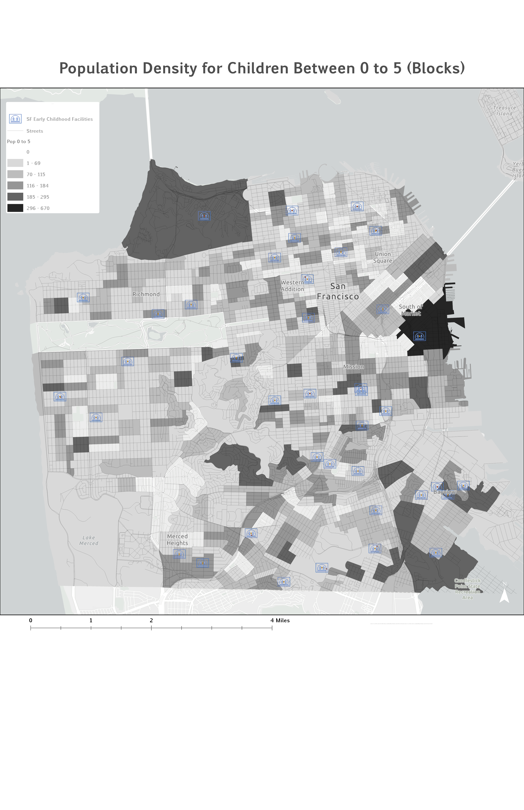
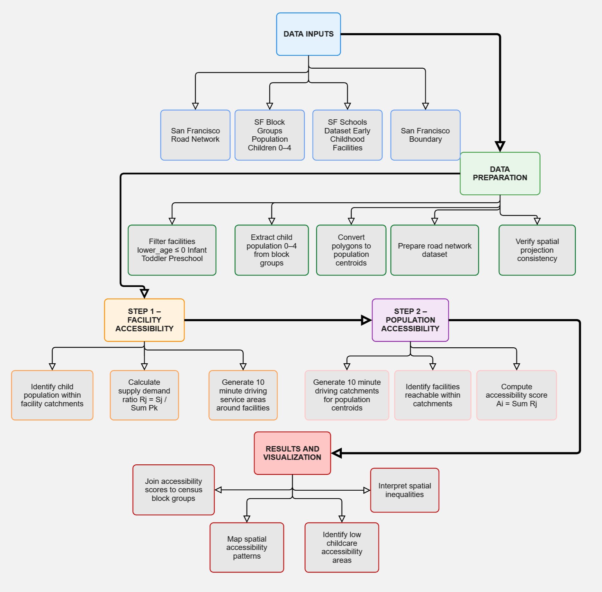

Overview
This project evaluates spatial accessibility to early childhood education facilities in San Francisco using the Two-Step Floating Catchment Area (2SFCA) method. The analysis focuses on children ages 0–5 and measures how well licensed daycare centers and preschool programs are distributed relative to the population that needs them — accounting for both the proximity of facilities and the competing demand each facility faces from the surrounding child population.
A 10-minute driving catchment was applied across 997 census block centroids citywide. The Closest Facility network solver in ArcGIS Pro served as a methodological substitute for the OD Cost Matrix, with each centroid connected to up to five reachable facilities. The resulting accessibility scores (Ai) were classified into five intervals using natural breaks and mapped to reveal pronounced geographic inequality in childcare access across San Francisco's neighborhoods.
Study Area & Population Distribution
San Francisco is a dense, geographically constrained urban environment on a peninsula in Northern California. Its compact form and highly developed street network make it well suited for network-based accessibility analysis. Child population data (ages 0–5) were sourced from the 2019 ACS at the census block level and spatially joined to TIGER/Line block polygons. Block centroids — generated via ArcGIS Pro's Feature to Point tool — served as demand locations in the 2SFCA calculation.

Study area — City and County of San Francisco. Dense street network and compact peninsula form make it suitable for driving-time catchment analysis.

Population density — children ages 0–5 by census block. Darker shades indicate higher concentrations. Notable clusters in the Mission, Bayview-Hunters Point, and Excelsior.
Facility Distribution — Licensed Childcare Locations
Supply data were downloaded from DataSF and filtered to include only facilities licensed to serve children ages 0–5. Each facility was represented as a point feature and weighted equally (Sj = 1), as no capacity data were available in the source dataset. Facilities cluster in the northeastern neighborhoods, the Mission, and the Bayview — but a visual comparison with the child population map suggests a mismatch, particularly in Bayview-Hunters Point.

Facility map — licensed early childhood education facilities in San Francisco. Orange circles indicate daycare centers (ages 0–5). Source: DataSF.
Data Sources
| Data Layer | Source | Format | Description |
|---|---|---|---|
| SF Early Childhood Facilities | DataSF | Point feature class | Licensed daycare and preschool facilities serving children 0–5 in San Francisco County |
| SF Blocks — Population Age 0–5 | US Census Bureau, 2019 ACS | Polygon / Point (centroids) | Total population of children ages 0–5 aggregated to census block level; centroids used as demand locations |
| San Francisco Street Network | Esri / ArcGIS Online Living Atlas | Network dataset | Road network used to compute 10-minute driving-time catchments via ArcGIS Pro Closest Facility solver |
Methods — Two-Step Floating Catchment Area (2SFCA)
The 2SFCA method accounts for both supply and demand while incorporating network-based travel time. It proceeds in two sequential steps, each using the same 10-minute driving catchment threshold.
-
01
Step 1 — Supply-to-Demand Ratio (Rj) by Facility
A 10-minute catchment is drawn around each facility j. All block centroids k falling within the catchment are identified, and their child populations summed. The supply-to-demand ratio Rj captures how burdened each facility is relative to its surrounding child population.
-
02
Step 2 — Accessibility Score (Ai) by Population Location
A catchment of the same size is drawn around each block centroid i. All Rj values of facilities j reachable within 10 minutes are summed to produce the final accessibility score Ai. A higher Ai means the location is served by multiple facilities that are not overwhelmed by competing demand.
-
03
Closest Facility Solver (substitute for OD Cost Matrix)
Because the OD Cost Matrix tool was unavailable, the Closest Facility network solver was used as a methodologically sound substitute. Block centroids were set as incidents and facilities as supply locations. The number of facilities to find per incident was set to five, ensuring each centroid was connected to up to five reachable facilities within the 10-minute impedance cutoff.
-
04
Score Aggregation & Cartographic Output
The resulting Routes table was joined to facility Rj attributes, then summarized by block centroid (IncidentID) — summing all Rj values per centroid to produce Ai. Scores were joined back to block polygons and classified using Natural Breaks (Jenks) into five access classes for cartographic display.
Analytical Workflow — ArcGIS Pro Implementation
The diagram below summarizes the full data preparation, network solving, Rj calculation, Ai aggregation, and visualization pipeline implemented in ArcGIS Pro.

Analytical workflow — 2SFCA implementation using the ArcGIS Pro Closest Facility solver. Steps 1–2 correspond to the two-step floating catchment procedure; intermediate steps detail data preparation, network solving, Rj calculation, and Ai aggregation.
Results — Childcare Accessibility Score (Ai)
The 2SFCA produced Ai scores ranging from 0.00285 to 0.01144, classified into five intervals using Jenks natural breaks. The results reveal pronounced geographic inequality across San Francisco's neighborhoods.

Childcare Accessibility Score (Ai) — 10-minute driving catchment. Five access classes by census block. Higher scores (blue) indicate greater access; lower scores (dark red) indicate underserved areas. Source: Author's analysis.
The lowest accessibility scores (Very Low Access) are concentrated in two zones: the western districts (Sunset, Richmond, Golden Gate Park corridor) and parts of the southeastern neighborhoods including Bayview-Hunters Point — areas where either few facilities exist within 10 minutes, or those present are overwhelmed by the surrounding child population.
Results — Supply-to-Demand Ratio (Rj) by Facility
Step 1 of the 2SFCA produces an Rj value for each facility — the ratio of its supply to the child population within its 10-minute catchment. A high Rj means the facility serves a relatively small competing population; a low Rj means it is burdened by a large surrounding child population.

Supply-to-demand ratio (Rj) by facility. Larger, darker blue dots = higher capacity relative to surrounding demand. Western facilities show high Rj but are too sparse to produce high Ai scores. Source: Author's analysis.

Demand per facility — total children ages 0–5 within each facility's 10-minute catchment. Bayview-Hunters Point and Mission facilities serve 1,607–2,035 children; western neighborhood facilities serve substantially fewer. Source: Author's analysis.
Facilities in the western Richmond and Sunset districts have higher Rj values (less competition per facility), yet these neighborhoods still score low on Ai — because very few facilities exist within a 10-minute drive at all. In Bayview-Hunters Point the problem is the opposite: dense route connections exist, but every reachable facility carries a very low Rj due to overwhelming competing demand.
Results — Network Connections & Facility Catchments
Two supplementary maps visualize the route structure produced by the Closest Facility solver and the catchment service areas connecting block centroids to reachable facilities.
.jpg)
Accessibility network — routes from block centroids to reachable facilities, classified by travel time band (<4 min, 4–6 min, 6–10 min). Sparse routes in the Sunset and Richmond confirm their low Ai scores. Source: Author's analysis.

Facility catchment — routes from block centroids to facilities classified by distance rank. Green = low distance; blue = medium; dashed = longer connections near the 10-minute threshold. Source: Author's analysis.
Results — Accessibility vs. Demand (Bivariate Map)
The bivariate map overlays Ai accessibility scores against child population density using a two-variable color scheme. Pink tones indicate high child population; blue tones indicate high accessibility score. Blocks appearing deep blue-purple are both densely populated and well-served. Blocks appearing pink or lavender are densely populated but poorly served — the most critically underserved zones.

Accessibility vs. Demand bivariate map. Pink = higher child population (0–5); blue = higher accessibility score (Ai). Areas with high pink and low blue — particularly Bayview-Hunters Point and parts of the Mission — represent the most critically underserved neighborhoods. Source: Author's analysis.
Discussion
The analysis reveals two distinct types of childcare underservice in San Francisco. In Bayview-Hunters Point — one of the city's historically lower-income communities of color — the problem is facility capacity relative to demand: some facilities exist, but each is overwhelmed by the surrounding child population, producing very low Rj and consequently low Ai scores. This aligns with broader patterns of urban inequality in which residents with the greatest need often have the least access to services.
The western Sunset and Richmond districts present a different challenge: fewer young children overall, but also very few facilities within a 10-minute drive. In a dense urban environment, a 10-minute drive covers a smaller geographic footprint than in suburban settings, and families without vehicles face compounded access barriers that this car-based analysis does not fully capture. The 2SFCA correctly identifies both neighborhoods as underserved — but for structurally different reasons that require different policy responses.
The method's key contribution is incorporating competition: a facility surrounded by thousands of children is functionally less accessible than an identical facility serving hundreds — a distinction invisible to simple proximity measures. However, the analysis measures potential spatial accessibility only, not realized utilization. High Ai scores do not guarantee enrollment, and low Ai scores may reflect non-spatial barriers — cost, subsidy availability, language of instruction — that this framework cannot capture.
Limitations
- Equal facility weighting (Sj = 1). No enrollment capacity data were available, so each facility was weighted equally regardless of size. A facility licensed for 12 children and one licensed for 80 children contribute identically to the Rj calculation. Incorporating licensed capacity from the full DataSF dataset would be the single most impactful improvement to the analysis.
- Binary catchment (standard 2SFCA). All residents within 10 minutes are treated as equally accessible; all beyond 10 minutes are completely excluded. The Enhanced 2SFCA (E2SFCA) addresses this by applying Gaussian distance-decay weights within the catchment, producing accessibility patterns more consistent with real-world behavior.
- Edge effects at city boundaries. Facilities in Daly City and northern San Mateo County — which may be reachable within 10 minutes from southern SF neighborhoods — are excluded because the analysis is bounded by county lines. This systematically underestimates Ai scores in the Excelsior and Visitacion Valley neighborhoods.
- Closest Facility solver cap of 5 facilities. Setting the number of facilities to find per incident to five may miss a sixth or more reachable facilities in dense areas like the Mission district, slightly underestimating Ai scores there. Setting the cap higher would reduce this risk at the cost of processing time.
- Car-based travel mode only. The analysis uses driving-time catchments, which disadvantages car-free households. Families in the Sunset and Richmond without vehicles face a more severe access barrier than the Ai scores suggest. A transit- or walk-based catchment would reveal additional equity gaps.
- MAUP at census block level. Block centroids may not accurately represent the location of all residents within irregularly shaped blocks, particularly large blocks in the western districts. Individual-level residential data would eliminate this source of aggregation error.